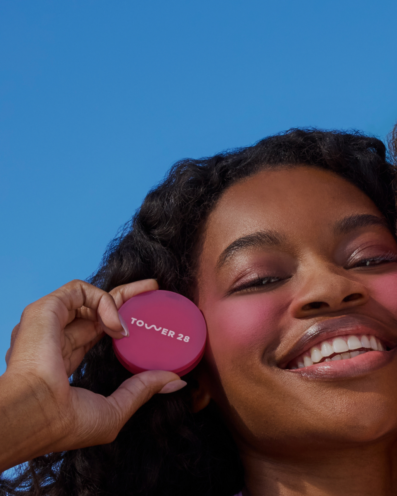
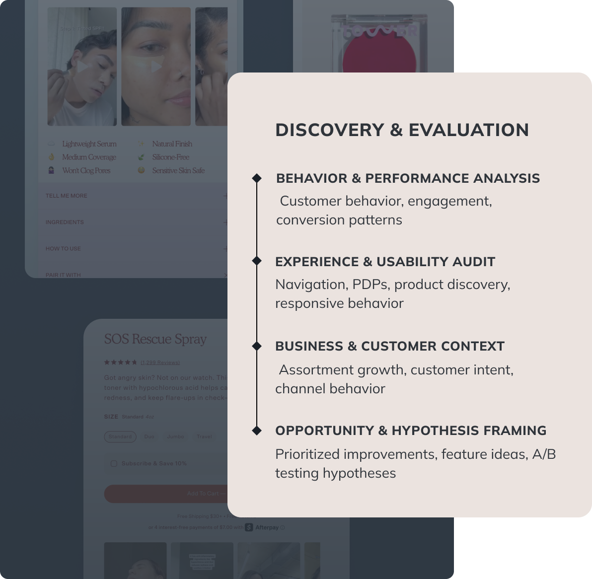
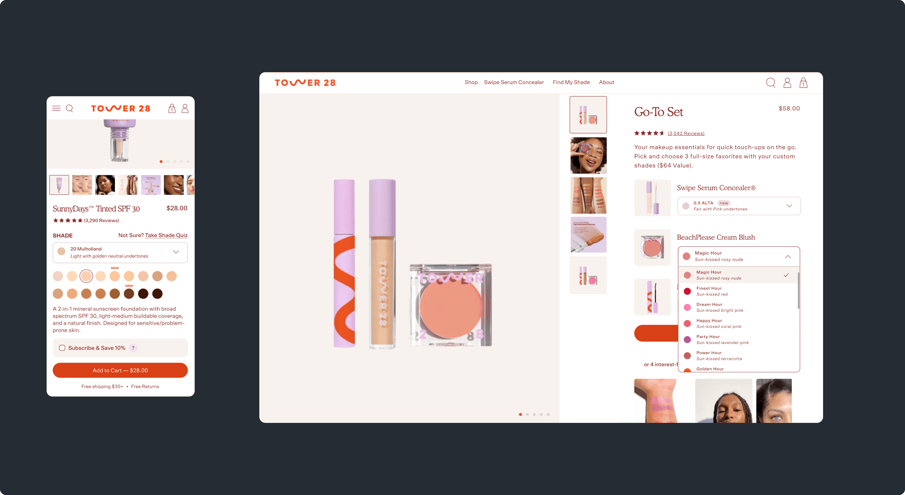
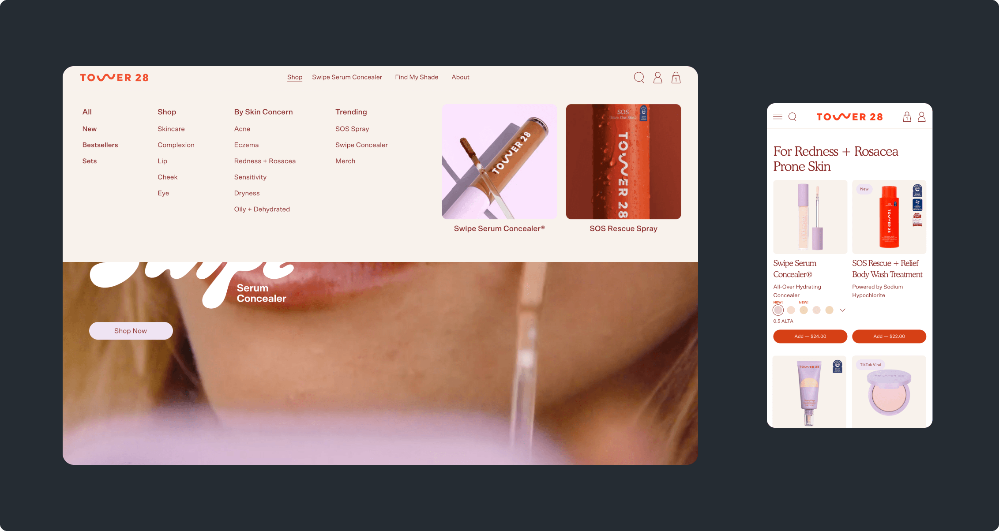
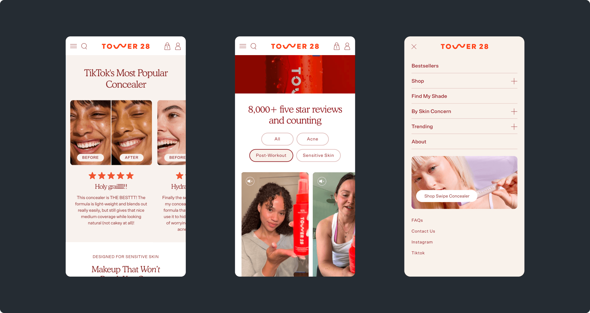

CRO Strategist | Senior Product Designer
Evolving the commerce experience to strengthen conversion and support continued growth
•UX Audit & Conversion Strategy
•Product Discovery & Navigation
•Design System Refinement
•Responsive Experience & Accessibility
•Feature Development & A/B Testing
Tower 28 is a sensitive-skin-first beauty and skincare brand. I partnered with the team to refine and optimize the digital shopping experience, with a focus on elevating conversion and strengthening retention as demand grew. The work centered on identifying key friction points and streamlining how customers shop, evaluate products, and move through the site.
The goal was to evolve Tower 28’s digital shopping experience to support stronger conversion, a more premium and consistent customer journey, and continued growth as the brand expanded.
•Increase Conversion Across Core Shopping and Purchase Flows
•Strengthen Consistency, Responsiveness, and Usability Across the Commerce Experience
•Prioritize High-Impact Opportunities and Shape a Roadmap for Feature Development, Experimentation, and A/B Testing

The engagement began with high-impact areas that needed immediate attention, with an initial focus on conversion, PDP performance, and responsive behavior. I helped prioritize these areas and translate them into focused design improvements while building a clearer understanding of where the experience needed the most support.
From there, the work expanded into a broader e-commerce performance audit and ongoing optimization process. Findings informed the roadmap, feature development, and A/B testing opportunities, with results feeding into continued iteration and refinement.
The focus was on refining content hierarchy and improving how users navigate product details. One critical area was shade selection — where users often struggled to differentiate between similar options. I addressed this by introducing more intuitive ways to browse and compare shades, allowing users to shop visually or use a structured dropdown with accessible shade information, making selection faster and more confident.

Conversion isn't limited to product pages. I applied an immersive, content-led approach to landing page experiences for Tower 28's hero product, using motion and visual storytelling to help users better understand the product. This experience creates a more compelling path from discovery to purchase, turning the page itself into a conversion touchpoint.
Navigation initially prioritized direct product access, primarily surfacing bestsellers while limiting visibility across the broader catalog. As the assortment expanded, this created a gap in product discovery and category exploration. To address this, we introduced a structured mega menu, enabling users to browse by category and shop by concern — guiding discovery through intent and making the catalog more accessible and relevant to different user needs.

As the experience evolved, inconsistencies across screens and UI components began to create friction in product exploration and purchase. Differences in color usage, typography, and component behavior made interaction cues less consistent across the site. I refined the system by aligning visual structure, clarifying color usage, and standardizing component behavior, creating a more cohesive and easier-to-navigate experience.

I also focused on enhancing responsive behavior across the site, where different screen sizes revealed gaps in visual balance and overall polish. Refined layout scaling and component behavior, resulted in a seamless, visually consistent experience with a consistent and premium feel at every breakpoint.